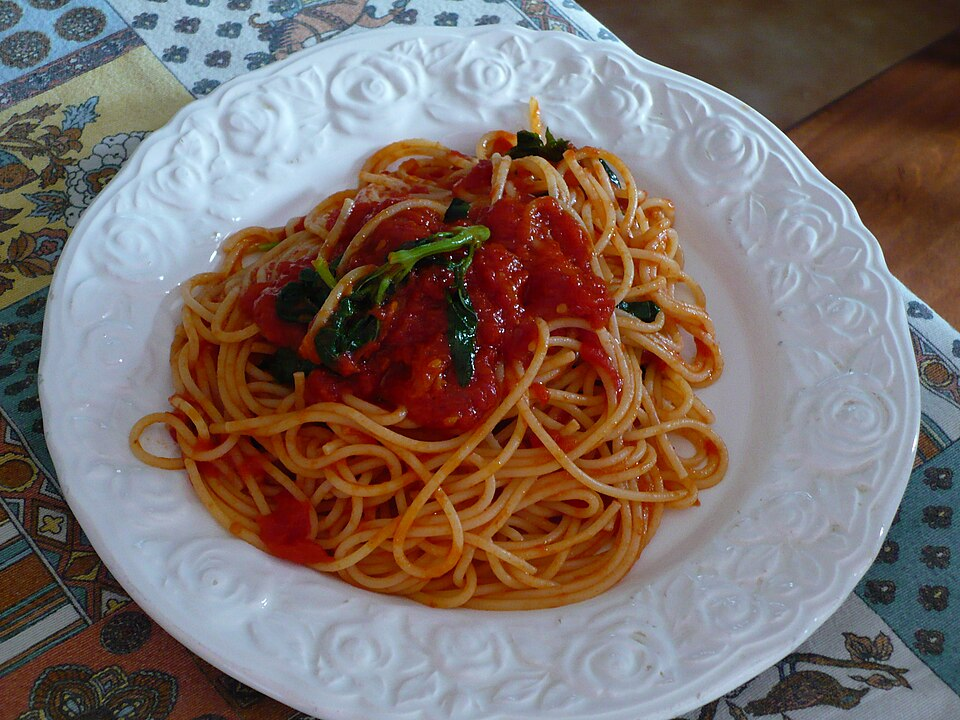

20 minutes · Serves 2
Tomato & Basil Pasta
A comforting classic for an easy weeknight dinner.
Ingredients
- 200 g pasta
- 1 tablespoon olive oil
- 2 minced garlic cloves
- 400 g canned chopped tomatoes
- A handful of fresh basil, salt, and pepper
Steps
- Cook pasta according to the package directions.
- Heat oil in a pan and gently cook garlic for 1 minute. Add tomatoes and simmer for 10 minutes.
- Toss with drained pasta and basil. Season to taste.